주택관리사보-1차 (2010-09-19 기출문제)
1과목: 민법
1. 민법상 '능력'에 관한 설명으로 옳은 것은? (다툼이 있으면 판례에 의함)
- 자기 행위의 결과를 정상적으로 인식할 수 없는 심각한 정신질환자는 권리능력을 상실한다.
- 만 10세 미만의 어린이는 의사무능력자로서 그가 하는 법률행위는 언제나 무효이다.
- 의사능력은 구체적인 법률행위와 관련하여 개별적으로 판단하여야 한다.
- 금치산자는 의사능력을 회복하더라도 법정대리인의 동의가 없으면 유언할 수 없다.
- 모(母)가 임신 중에 타인의 불법행위로 태아의 부(父)가 사망한 경우, 그 태아는 출생하더라도 자기의 정신적 고통에 따른 위자료청구권을 취득하지 못한다.
(정답률: 알수없음)

2. 법인의 정관변경에 관한 설명으로 옳은 것은? (다툼이 있으면 판례에 의함)
- 재단법인의 기본재산을 처분하려면 주무관청의 허가가 필요하나, 새로이 기본재산으로 편입하는 경우에는 주무관청의 허가를 요하지 않는다.
- 사단법인의 정관은 정관에 다른 규정이 있더라도 출석 사원 3분의 2이상의 동의가 있으면 주무관청의 허가를 받아 변경할 수 있다.
- 사원자격의 득실변경에 관한 정관의 기재사항이 적법한 절차를 거쳐서 변경된 경우에는 구성원이 다르더라도 그 변경 전후의 사단법인은 동일성을 유지하면서 존속한다.
- 재단법인의 명칭은 정관의 기재사항이므로 주무관청의 허가를 받더라도 변경할 수 없다.
- 사단법인의 정관은 사단법인의 동일성을 해하거나 그 본질에 반하는 경우에도 총사원의 동의가 있으면 변경할 수 있다.
(정답률: 알수없음)
3. 해외지사에서 장기간 파견근무를 하게 된 甲은 사촌 동생 乙에게 자신 소유의 X건물에 대한 관리ㆍ처분을 위임하였다. 다음 설명 중 옳지 않은 것은? (다툼이 있으면 판례에 의함)
- 乙이 X건물을 매각함에 있어 甲에게 경제적으로 불리한 계약이라도 법원의 허가를 받을 필요는 없다.
- 乙의 권한이 甲의 부재 중에 소멸한 경우, 가정법원은 甲의 추정상속인의 청구가 있으면 재산관리에 필요한 처분을 명해야 한다.
- 甲의 생사가 불명하여 법원이 乙을 甲의 재산관리인으로 유임한 경우, 乙은 법원의 허가 없이 X건물을 매각할 수 있다.
- 甲이 사망하더라도 乙은 甲의 상속인 등이 X건물에 대한 관리업무를 할 수 있을 때까지 그 사무의 처리를 계속하여야 한다.
- 甲의 생사가 불명하여 법원이 새로 선임한 재산관리인은 재산관리를 위하여 지출한 필요비와 그 이자를 법원에 청구할 수 있다.
(정답률: 37%)
4. 법인 아닌 사단에 관한 설명으로 옳지 않은 것은? (다툼이 있으면 판례에 의함)
- 법인 아닌 사단도 부동산에 관하여 등기권리자가 될 수 있다.
- 법인 아닌 사단도 그 대표자가 있는 경우에는 사단 명의로 소송을 제기할 수 있다.
- 주택법상의 아파트 입주자 대표회의는 동별 세대수에 비례하여 선출되는 동별 대표자를 구성원으로 하는 법인 아닌 사단이다.
- 법인 아닌 사단인 재건축조합의 대표자는 조합원 전원의 동의를 얻어 자기 명의로 조합재산 보존을 위한 소를 제기할 수 있다.
- 법인 아닌 사단인 아파트 부녀회의 수익금이 부녀회장명의의 예금계좌에 입금되어 있는 때에, 위 수익금의 관리권을 승계한 입주자 대표회의가 수익금의 지급을 청구할 경우 그 상대방은 부녀회이다.
(정답률: 알수없음)
5. 甲은 친권상실선고를 받은 남편 A와 이혼하였다. 그 후 甲은 적법한 유언으로 8세 된 아들 乙의 후견인으로 친구 B를 지정한 후 사망하였다. 乙에게는 출생 후 자신을 실질적으로 양육해 준 72세 된 외할머니 C, 68세 된 친할아버지 D, 그리고 대단한 재력가인 큰아버지 E가 있다. 다음 중 乙의 법정대리인은 누구인가?
- A
- B
- C
- D
- E
(정답률: 알수없음)
6. 한정치산자 甲은 법정대리인 丙의 동의 없이 자기 소유의 토지를 乙에게 매도하기로 하는 계약을 체결하였다. 이에 관한 설명으로 옳은 것은?
- 乙은 甲에 대하여 위 매매계약의 추인 여부에 대한 확답을 최고할 수 있다.
- 乙로부터 최고를 받은 丙이 유예기간 내에 친족회의 동의를 받은 확답을 발하지 않은 경우, 위 매매계약은 추인한 것으로 본다.
- 乙이 매매계약 당시 甲이 한정치산자임을 알았다면 乙의 최고권은 인정되지 않는다.
- 丙의 추인이 있기 전까지 선의의 乙은 甲에 대하여 위 토지에 대한 매수의 의사표시를 철회할 수 있다.
- 甲이 丙의 동의서를 위조하여 乙로 하여금 자신을 능력자로 믿게 한 경우에도 丙의 취소권은 소멸하지 않는다.
(정답률: 40%)
7. 실종선고에 관한 설명으로 옳지 않은 것은? (다툼이 있으면 판례에 의함)
- 추락한 항공기 중에 있던 자의 실종기간은 항공기가 추락한 때부터 기산한다.
- 생사가 불명한 자의 제1순위 상속인이 있더라도 특별한 사정이 없는 한 제2순위 상속인은 실종선고를 청구할 수 있다.
- 실종선고로 인한 사망의 효과를 바로잡기 위해서는 반드시 실종선고를 취소하여야 한다.
- 실종선고가 취소되더라도 '선고 후 그 취소 전'에 선의로 한 법률행위에는 영향을 미치지 않는다.
- 실종선고를 직접 원인으로 하여 재산을 취득한 자가 선의라면 그 받은 이익이 현존하는 한도에서 반환하면 된다.
(정답률: 알수없음)
8. 비영리 사단법인의 재산귀속형태는?
- 사원들의 총유
- 사단법인의 단독소유
- 사원들의 합유
- 사원들의 공유
- 대표이사의 단독소유
(정답률: 28%)
9. 비영리법인의 청산에 관한 설명으로 옳지 않은 것은? (다툼이 있으면 판례에 의함)
- 청산인의 직무에 관한 규정은 강행규정이다.
- 법인 해산 시 청산인의 결원으로 인하여 손해가 생길 염려가 있는 때에는 법원은 직권으로 청산인을 선임할 수 있다.
- 청산인은 채권신고기간 내에는 변제기가 도래한 채무도 변제하지 못한다.
- 비영리법인의 해산사유가 발생하면 청산절차가 개시됨과 동시에 권리능력이 소멸한다.
- 청산인은 그가 알고 있는 채권자가 채권신고를 하지 않았더라도 청산으로부터 제외하지 못한다.
(정답률: 알수없음)
10. 주소에 관한 설명으로 옳지 않은 것은? (다툼이 있으면 판례에 의함)
- 주민등록지는 반증이 없는 한 주소로 추정된다.
- 주소를 정하거나 변경함에 있어 정주의 의사가 필요한 것은 아니다.
- 주소는 동시에 두 곳 이상 둘 수 있다.
- 가주소는 특정 거래관계에 관하여 주소로서의 기능을 갖는다.
- 주소는 변제 장소를 정하는 표준이 될 수 없다.
(정답률: 알수없음)
11. 법률행위의 분류와 그에 해당하는 예가 올바르게 연결된 것은?
- 상대방 없는 단독행위 - 유언
- 상대방 있는 단독행위 - 증여
- 불요식행위 - 법인 설립
- 준물권행위 - 저당권 설정
- 물권행위 - 매매
(정답률: 50%)
12. 법률행위의 목적에 관한 설명으로 옳지 않은 것은? (다툼이 있으면 판례에 의함)
- 효력규정인 강행법규에 위반하는 법률행위는 무효이다.
- 법률행위의 일부가 무효인 경우에는 원칙적으로 그 전부를 무효로 한다.
- 법률행위의 목적은 법률행위시에 반드시 확정되어 있을 필요는 없다.
- 법률행위의 목적이 물리적으로 가능하더라도 사회통념상 실현할 수 없으면 무효이다.
- 법률행위의 목적이 성립 당시에는 가능하였지만 그 이행 전에 불가능하게 된 경우, 그 법률행위는 무효가 된다.
(정답률: 알수없음)
13. 법률행위의 해석에 관한 설명으로 옳은 것은? (다툼이 있으면 판례에 의함)
- 법률행위의 해석은 문구에 구애받지 않고 어디까지나 당사자가 그 표시행위에 부여한 내심적 의사에 따라야 한다.
- 당사자가 모두 X토지를 매매하기로 합의하였으나 그 지번을 착각하여 계약서에 Y토지로 표시한 경우 Y토지에 대한 매매계약이 성립한다.
- 매매계약서상의 “계약사항에 대한 이의가 생겼을 때에는 매도인의 해석에 따른다”는 조항은 법원의 법률행위 해석권을 구속하지 않는다.
- 당사자의 의사가 명확한 경우에도 사실인 관습이 우선하여 법률행위 내용을 확정하는 기준이 된다.
- 관습법은 법령으로서의 효력이 없는 단순한 관행으로서 법률행위 당사자의 의사를 보충함에 그친다.
(정답률: 34%)
14. 甲은 乙과 부동산 매매계약을 체결하고 대금 전부를 지급받았으나, 부동산 가격이 폭등하자 丙에게 다시 매도하고 소유권이전등기를 해 주었다. 이에 관한 설명으로 옳지 않은 것은? (다툼이 있으면 판례에 의함)
- 이중매매라는 사실만으로 甲ㆍ丙 간의 계약이 무효로 되는 것은 아니다.
- 甲ㆍ丙 간의 계약이 유효하면 특별한 사정이 없는 한 甲의 乙에 대한 소유권이전등기 의무는 이행불능이 된다.
- 甲ㆍ丙 간의 계약이 무효가 아닌 한 먼저 소유권이 전등기를 마친 丙이 소유권을 취득한다.
- 丙이 甲ㆍ乙 간의 계약이 체결되었다는 것을 알고 있었다는 사실만으로 甲ㆍ丙 간의 계약은 무효이다.
- 甲ㆍ丙 간의 계약이 무효라고 하더라도 乙이 丙을 상대로 직접 자신에게 등기를 이전할 것을 청구할 수는 없다.
(정답률: 알수없음)
15. 반사회질서 행위에 관한 설명으로 옳지 않은 것은? (다툼이 있으면 판례에 의함)
- 법률행위의 성립 과정에서 불법적 방법이 사용되었다면 그 법률행위는 반사회질서 행위로 언제나 무효이다.
- 법률행위가 사회질서에 반하여 무효인 경우에는 선의의 제3자에게도 대항할 수 있음이 원칙이다.
- 당초부터 오직 보험사고를 가장하여 보험금을 취득할 목적으로 생명보험계약을 체결한 경우 그 생명보험계약은 사회질서에 반하여 무효이다.
- 법률행위가 사회질서에 반하여 무효인 경우 이행이 있기 전이라면 이행할 필요가 없다.
- 도박채무의 부담행위 및 변제약속은 반사회질서 행위로서 무효이다.
(정답률: 알수없음)
16. 불공정한 법률행위에 관한 설명으로 옳은 것은? (다툼이 있으면 판례에 의함)
- 부담 없는 증여계약은 불공정한 법률행위에 해당하는 지의 여부를 논의할 수 있는 성질의 것이 아니다.
- 불공정한 법률행위로 무효를 주장하기 위해서는 궁박ㆍ경솔ㆍ무경험이라는 요건을 모두 갖추어야 한다.
- 궁박ㆍ경솔ㆍ무경험의 증명책임은 무효를 주장하는 자의 상대방에게 있다.
- 심리적 원인에 기인한 '궁박'은 불공정한 법률행위의 요건이 될 수 없다.
- 불공정한 법률행위는 폭리행위자가 상대방의 궁박ㆍ경솔ㆍ무경험과 같은 사정을 알면서 그것을 이용하려는 의사를 요하지 않는다.
(정답률: 알수없음)
17. 甲은 강제집행을 면할 목적으로 乙과 통정하여 자신의 부동산에 대한 가장매매계약을 체결하고 소유권이전등기를 해주었다. 그 후 乙은 丙으로부터 금원을 대출받으면서 그 부동산에 저당권을 설정해 주었다. 이에 관한 설명으로 옳지 않은 것은? (다툼이 있으면 판례에 의함)
- 甲ㆍ乙 간의 매매계약은 당사자 사이에서는 무효이다.
- 甲 뿐만 아니라 乙도 매매계약의 무효를 주장할 수 있다.
- 甲은 乙과의 매매계약을 추인할 수 있으나 그 추인의 효력은 소급하지 않는다.
- 甲이 丙의 악의를 이유로 丙에게 저당권등기의 말소를 청구하려면 甲이 丙의 악의를 증명하여야 한다.
- 甲ㆍ乙 간의 통정사실을 알지 못한 데에 丙에게 과실이 있다면 甲은 丙에게 저당권등기의 말소를 청구할 수 있다.
(정답률: 알수없음)
18. 사기 또는 강박에 의한 의사표시에 관한 설명으로 옳지 않은 것은? (다툼이 있으면 판례에 의함)
- 부정행위에 대한 고소ㆍ고발도 강박행위가 될 수 있다.
- 사기에 의한 의사표시가 성립하기 위해서는 기망행위가 위법하여야 한다.
- 중요한 구체적 사실을 신의성실의무에 비추어 비난 받을 정도의 방법으로 허위 고지한 상품 선전 행위는 기망행위가 될 수 있다.
- 특별한 사정이 없는 한 교환계약의 당사자가 자기 소유 목적물의 시가를 묵비하더라도 기망행위가 되지 않는다.
- 제3자의 사기ㆍ강박에 의하여 상대방 있는 의사표시를 한 자는 상대방이 그 사실을 알았던 때에 한하여 취소할 수 있다.
(정답률: 알수없음)
19. 의사표시의 효력발생에 관한 설명으로 옳지 않은 것은? (다툼이 있으면 판례에 의함)
- 상대방 있는 의사표시는 그 통지가 상대방에 도달한 때로부터 그 효력이 생긴다.
- 표의자가 의사표시를 발한 후 행위능력을 상실하더라도 그 의사표시의 효력에 영향을 미치지 않는다.
- 의사표시의 발신자는 도달 후에도 상대방의 이행착수 전에는 그 의사표시를 철회할 수 있다.
- 격지자간의 계약은 승낙의 통지를 발송한 때에 성립한다.
- 상대방이 의사표시를 수령할 때 무능력자인 경우 표의자는 그 의사표시로써 상대방에게 대항하지 못한다.
(정답률: 50%)
20. 물건에 관한 설명으로 옳은 것은? (다툼이 있으면 판례에 의함)
- 쌀과 같이 개성이 중요시되지 않는 물건은 특정물로 거래할 수 없다.
- 국립공원의 입장료는 민법상 과실에 해당한다.
- 부동산의 일부가 용익물권의 객체가 되는 경우는 없다.
- 종물은 주물로부터 독립한 물건이어야 한다.
- 법정과실은 그것이 원물로부터 분리될 때에 이를 수취할 권리자에게 속한다.
(정답률: 알수없음)
21. 권리의 원시취득 사유에 해당하지 않는 것을 모두 고른 것은? (다툼이 있으면 판례에 의함)
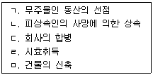
- ㄱ, ㄴ
- ㄴ, ㄷ
- ㄷ, ㄹ
- ㄴ, ㄷ, ㄹ
- ㄷ, ㄹ, ㅁ
(정답률: 17%)
22. 무권대리인 乙은 甲의 대리인이라 칭하면서 甲소유의 부동산을 丙에게 매도하였다. 이에 관한 설명으로 옳지 않은 것은?
- 甲이 丙에게 乙의 무권대리행위를 추인하면, 위 매매계약은 추인한 때로부터 효력이 있다.
- 甲이 乙에게 무권대리행위를 추인하였지만 丙이 이를 알지 못하였다면 甲은 추인으로써 丙에게 대항할 수 없다.
- 丙은 甲에게 상당한 기간을 정하여 추인여부의 확답을 최고할 수 있다.
- 丙이 乙의 대리권 없음을 알지 못하였다면, 丙은 甲의 추인이 있기 전에 계약을 철회할 수 있다.
- 乙이 행위능력이 없는 때에는, 乙은 丙에 대하여 계약의 이행 또는 손해배상책임을 지지 않는다.
(정답률: 19%)
23. 자기계약과 쌍방대리에 관한 설명으로 옳은 것을 모두 고른 것은? (다툼이 있으면 판례에 의함)
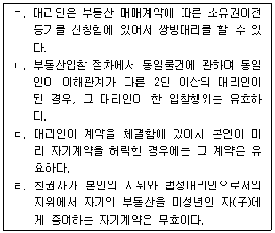
- ㄱ, ㄴ
- ㄱ, ㄷ
- ㄴ, ㄷ
- ㄴ, ㄹ
- ㄷ, ㄹ
(정답률: 알수없음)
24. 복대리에 관한 설명으로 옳지 않은 것은? (다툼이 있으면 판례에 의함)
- 법정대리인이 부득이한 사유로 복대리인을 선임한 경우 본인에 대하여 그 선임감독에 관한 책임을 진다.
- 복대리에도 표현대리에 관한 법리가 적용된다.
- 임의대리인이 본인의 지명에 의하여 복대리인을 선임한 경우에도 본인에 대하여 책임을 지는 경우가 있다.
- 임의대리인은 본인의 승낙이 있는 경우에 한하여 복대리인을 선임할 수 있다.
- 복대리인의 대리권 범위는 대리인의 대리권 범위를 넘지 못한다.
(정답률: 19%)
25. 표현대리에 관한 설명으로 옳지 않은 것은? (다툼이 있으면 판례에 의함)
- 표현대리가 성립하는 경우에도 선의의 상대방은 본인의 추인이 있을 때까지 무권대리를 이유로 계약을 철회할 수 있다.
- 대리권소멸 후의 표현대리는 법정대리에도 적용된다.
- 대리권수여 표시에 의한 표현대리에서 대리권의 수여표시는 대리인이라는 문자를 사용한 경우에만 한정되지 않는다.
- 권한을 넘은 표현대리에 있어서 기본대리권에는 복대리권도 포함된다.
- 표현대리가 성립하여 본인이 이행책임을 지는 경우 상대방에게 과실이 있다면 과실상계의 법리가 적용된다.
(정답률: 알수없음)
26. 조건에 관한 설명으로 옳지 않은 것은? (다툼이 있으면 판례에 의함)
- “건축허가 신청이 불허되면 계약은 효력을 상실한다”는 특약은 해제조건에 관한 약정이다.
- 조건이 법률행위 당시에 이미 성취된 것인 때에는 그 조건이 해제조건이면 그 법률행위는 무효로 한다.
- 약혼예물의 수수는 혼인의 불성립을 해제조건으로 하는 증여와 유사한 성질을 갖는다.
- 조건부 법률행위는 조건을 붙이고자 하는 의사와 그 표시가 요구된다.
- 부첩관계의 종료를 해제조건으로 하는 증여계약은 조건 없는 법률행위가 된다.
(정답률: 알수없음)
27. 취소할 수 있는 법률행위의 추인에 관한 설명으로 옳지 않은 것은? (다툼이 있으면 판례에 의함)
- 상대방이 취소권자에 대하여 이행의 청구를 한 경우에는 법정추인이 된다.
- 추인은 그 행위가 취소할 수 있는 것임을 알고 하여야 한다.
- 취소권자가 취소할 수 있는 법률행위를 적법하게 추인하면 더 이상 취소할 수 없다.
- 법정대리인은 취소원인이 종료하기 전이라도 추인할 수 있다.
- 취소권자가 추인할 수 있는 후에 이의를 유보하지 않고 담보를 제공한 경우에는 추인한 것으로 간주된다.
(정답률: 알수없음)
28. 다음 중 무효인 법률행위에 해당하는 것을 모두 고른 것은? (다툼이 있으면 판례에 의함)
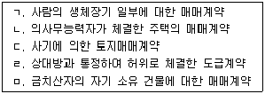
- ㄱ, ㄴ, ㅁ
- ㄴ, ㄷ, ㄹ
- ㄱ, ㄴ, ㄹ
- ㄱ, ㄷ, ㅁ
- ㄷ, ㄹ, ㅁ
(정답률: 알수없음)
29. 임차인 甲은 임대인 乙과 乙의 건물 전부에 대해 임대차계약을 체결하였는데 임차권등기를 하지 못했다. 이에 관한 설명으로 옳은 것은? (다툼이 있으면 판례에 의함)
- 甲과 乙이 건물면적을 지정하여 계약을 체결하였는데 면적이 부족하더라도 甲은 乙에게 담보책임을 물을 수 없다.
- 계약체결시 제3자 丙이 건물 전부를 불법점유하고 있는 경우, 甲은 임차권에 기한 방해배제청구권으로 丙에게 퇴거를 청구할 수 있다.
- 甲이 필요비와 유익비를 지출한 때에는 임대차 종료 시에 그 가액의 증가가 현존한 때에 한하여 상환을 청구할 수 있다.
- 임차인의 비용상환청구권에 관한 규정은 임의규정이므로 甲이 이를 포기하는 약정은 유효하다.
- 甲이 乙의 동의 없이 위 건물 전부를 전대한 경우, 전차인은 乙에게 대항할 수 있다.
(정답률: 알수없음)
30. 민법에서 채권의 소멸원인으로 규정하고 있는 것이 아닌 것은?
- 대물변제
- 공탁
- 상계
- 혼동
- 혼화
(정답률: 알수없음)
31. 다음 설명 중 옳지 않은 것을 모두 고른 것은?
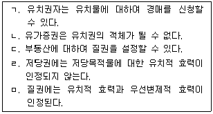
- ㄱ, ㄴ
- ㄱ, ㄹ
- ㄴ, ㄷ
- ㄷ, ㅁ
- ㄹ, ㅁ
(정답률: 알수없음)
32. 甲소유의 X토지를 乙이 20년간 소유의 의사로 평온ㆍ공연하게 점유하여 취득시효기간이 만료되었으나, 乙은 그 등기를 하지 않았다. 그 후 甲은 丙과 X토지에 대한 매매계약을 체결하였다. 다음 설명 중 옳지 않은 것은? (다툼이 있으면 판례에 의함)
- 丙의 소유권이전등기 완료 후에도 乙의 평온ㆍ공연한 자주점유가 20년 이상 계속되었다면 乙은 丙에 대하여 취득시효의 완성을 주장할 수 있다.
- 甲ㆍ丙 간의 토지매매계약은 원칙적으로 유효하므로 丙이 X토지에 대한 소유권이전등기를 완료하였다면 그 토지의 소유권을 취득할 수 있다.
- 乙이 甲에게 소유권이전등기를 청구한 후 甲이 X토지를 丙에게 매도하여 이전등기까지 경료해 준 경우, 乙은 甲에 대하여 손해배상을 청구할 수 있다.
- 만약 丙이 甲의 배임행위에 적극 가담하여 乙에 대한 소유권이전등기 의무를 불가능하게 하였다면 丙은 소유권을 취득하지 못한다.
- X토지가 미등기부동산인 경우에는 소유권이전등기가 불가능하므로 乙은 취득시효의 완성만으로 등기 없이도 소유권을 취득할 수 있다.
(정답률: 알수없음)
33. 사정변경의 원칙에 관한 설명으로 옳은 것은? (다툼이 있으면 판례에 의함)
- 민법에는 사정변경의 원칙에 입각한 일반규정과 개별규정이 없다.
- 계약당사자 일방의 책임 있는 사유로 인해 현저한 사정변경이 초래된 경우, 그 당사자는 사정변경을 이유로 계약을 해제할 수 있다.
- 사정변경으로 인한 계약해제에 있어서 사정이라 함은 계약의 기초가 되었던 객관적인 사정 및 당사자의 주관적 또는 개인적인 사정을 포함하는 것이다.
- 이사로 재직 중 채무액과 변제기가 특정되어 있는 회사의 확정채무에 대하여 보증을 한 후 이사직을 사임한 자는 사정변경을 이유로 그 보증계약을 해지할 수 있다.
- 현저하게 변경된 사정이 계약 성립 당시에 당사자가 예견할 수 있었던 것이라면 그 당사자는 계약을 해제할 수 없다.
(정답률: 알수없음)
34. 권리남용에 관한 설명으로 옳은 것은? (다툼이 있으면 판례에 의함)
- 권리자가 법령에 위반되어 무효임을 알면서도 법률행위를 한 후 강행법규 위반을 이유로 그 법률행위의 무효를 주장한다면 원칙적으로 권리남용에 해당한다.
- 권리자의 권리행사에 대하여 상대방이 권리남용을 주장하지 않는다면 법원은 이를 직권으로 판단할 수 없다.
- 당사자간의 합의로 권리남용금지 원칙의 적용을 배제하기로 하는 특약은 허용되지 않는다.
- 채무자가 소멸시효에 기한 항변권을 행사하는 경우에는 권리남용금지 원칙의 지배를 받지 않는다.
- 권리남용을 이유로 권리 그 자체가 박탈되는 경우는 없다.
(정답률: 20%)
35. 대리에 관한 설명으로 옳지 않은 것은? (다툼이 있으면 판례에 의함)
- 대리행위의 효과는 일단 대리인에게 귀속하였다가 본인과 대리인 간의 내부적 법률관계에 따라 본인에게 이전한다.
- 물건을 매도하는 대리권을 수여받은 대리인은 특별한 사정이 없는 한 매매계약에 따른 중도금이나 잔금을 수령할 수 있다.
- 본인은 원인된 법률관계가 존속하고 있더라도 수권행위를 철회하여 임의대리권을 소멸시킬 수 있다.
- 지명채권 양도의 통지도 대리인을 통하여 할 수 있다.
- 수인의 대리인에게 대리권을 수여한 경우, 원칙적으로 각자가 본인을 대리한다.
(정답률: 알수없음)
36. 권리의 분류와 그 예시로서 옳지 않은 것은? (다툼이 있으면 판례에 의함)
- 청구권 - 부양청구권, 지상권자의 지상물매수청구권
- 항변권 - 동시이행의 항변권, 한정승인의 항변권
- 형성권 - 동의권, 상계권
- 지배권 - 저당권, 특허권
- 사원권 - 결의권, 소수사원권
(정답률: 50%)
37. 甲은 乙에 대하여 채권을 가지고 있다. 다음 설명 중 옳은 것은? (다툼이 있으면 판례에 의함)
- 甲이 소멸시효 기간 만료 전 최고를 한 후 6개월 이내에 소를 제기한 경우, 그 소제기 시에 시효중단의 효력이 생긴다.
- 甲의 乙에 대한 시효중단의 효력은 乙의 보증인에게는 미치지 않는다.
- 乙이 명시적으로 채무를 승인한 경우뿐만 아니라 묵시적으로 승인한 경우에도 소멸시효는 중단될 수 있다.
- 甲이 乙을 사기죄로 고소하여 형사재판이 개시된 경우, 특별한 사정이 없는 한 소멸시효의 중단사유인 재판상의 청구로 볼 수 있다.
- 甲이 이미 사망한 乙을 피신청인으로 하여 가압류신청을 한 경우, 법원의 가압류결정이 내려지면 소멸시효가 중단된다.
(정답률: 알수없음)
38. 소멸시효기간에 관한 설명으로 옳지 않은 것을 모두 고른 것은? (다툼이 있으면 판례에 의함)
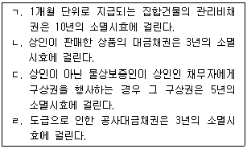
- ㄱ, ㄴ
- ㄱ, ㄷ
- ㄴ, ㄷ
- ㄴ, ㄹ
- ㄷ, ㄹ
(정답률: 알수없음)
39. 제척기간에 관한 설명으로 옳지 않은 것은? (다툼이 있으면 판례에 의함)
- 제척기간에 의한 권리소멸의 효과는 그 기간이 경과한 때로부터 장래에 향하여 생긴다.
- 제척기간에 의한 권리소멸의 여부는 당사자의 주장에 관계없이 법원이 직권으로 조사하여야 한다.
- 불법행위를 한 날로부터 10년이 경과하면 손해배상청구를 할 수 없도록 한 민법의 규정은 제척기간이 아니라 소멸시효에 관한 규정이다.
- 형성권의 행사기간은 당사자의 약정에 관계없이 10년이다.
- 제척기간에는 기간의 중단이 있을 수 없다.
(정답률: 10%)
40. 소멸시효에 관한 설명으로 옳지 않은 것은?
- 소멸시효는 그 기산일에 소급하여 효력이 생긴다.
- 소멸시효 완성 전이라도 시효의 이익을 미리 포기할 수 있다.
- 소멸시효는 법률행위에 의하여 이를 배제, 연장 또는 가중할 수 없으나 이를 단축 또는 경감할 수 있다.
- 시효중단의 효력이 있는 승인에는 상대방의 권리에 관한 처분능력이나 권한이 있음을 요하지 않는다.
- 부작위를 목적으로 하는 채권의 소멸시효는 위반행위를 한 때로부터 진행한다.
(정답률: 알수없음)
2과목: 회계원리
41. '재무제표의 작성과 표시를 위한 개념체계'에서 제시한 자산에 관한 설명으로 옳지 않은 것은?
- 자산이 갖는 미래경제적효익이란 직접으로 또는 간접으로 미래 현금 및 현금성자산의 기업에의 유입에 기여하게 될 잠재력을 말한다.
- 자산의 존재를 판단하기 위해서 물리적 형태가 필수적인 것은 아니다.
- 자산의 정의를 충족하기 위해서는 관련된 지출이 필수적이다.
- 소유권이 자산의 존재를 판단함에 있어 필수적인 것은 아니다.
- 미래에 발생할 것으로 예상되는 거래나 사건 자체만으로는 자산이 창출되지 아니한다.
(정답률: 알수없음)
42. '재무제표의 작성과 표시를 위한 개념체계'에서 제시한 재무제표 기본가정으로 옳은 것은?
- 발생기준, 계속기업
- 자본유지개념, 수탁책임
- 이해가능성, 비교가능성
- 질적특성, 형식보다 실질의 우선
- 진실하고 공정한 관점, 공정한 표시
(정답률: 42%)
43. '재무제표의 작성과 표시를 위한 개념체계'에 관한 설명으로 옳지 않은 것은?
- 개념체계는 외부이용자를 위한 재무제표의 작성과 표시에 있어 기초가 되는 개념을 정립한다.
- 개념체계는 감사인이 재무제표가 한국채택국제회계기준을 따르고 있는지에 대한 의견을 형성하는데 도움을 제공한다.
- 개념체계는 재무제표의 이용자가 한국채택국제회계기준에 따라 작성된 재무제표에 포함된 정보를 해석하는데 도움을 제공한다.
- 개념체계는 재무제표의 작성자가 한국채택국제회계기준을 적용하거나 한국채택국제회계기준이 미비한 거래에 대한 회계처리를 하는데 도움을 제공한다.
- 개념체계는 특정한 측정과 공시에 관한 기준을 정하지 아니하나, 특정 한국채택국제회계기준에 우선한다.
(정답률: 31%)
44. '재무제표의 작성과 표시를 위한 개념체계'에서 제시한 재무제표의 질적특성에 관한 설명으로 옳지 않은 것은?
- 신뢰성이 가지는 중요한 의미는 이용자가 재무제표의 작성에 사용된 회계정책 및 회계정책의 변경과 그 영향에 대해 알 수 있다는 것이다.
- 목적적합한 정보란 이용자가 과거, 현재 또는 미래의 사건을 평가하거나 과거의 평가를 확인 또는 수정하도록 도와 주어 경제적 의사결정에 영향을 미치는 정보를 말한다.
- 유용한 정보가 일부 이용자에게 너무 어려워서 이해하기 어려울 것이라는 이유만으로 제외하여서는 아니 된다.
- 신중성은 불확실한 상황에서 요구되는 추정에 필요한 판단을 하는 경우, 자산이나 수익이 과대평가되지 않고 부채나 비용이 과소평가되지 않도록 상당한 주의를 기울이는 것을 말한다.
- 재무제표의 주요한 질적특성은 이해가능성, 목적적합성, 신뢰성 및 비교가능성이다.
(정답률: 20%)
45. (주)대한은 모든 상품을 전액 외상으로 매입하여, 외상으로 판매한 다음 차후에 현금으로 결제한다. 다음 자료를 이용할 때 (주)대한의 매출총이익은?
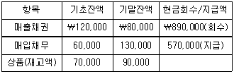
- ￦210,000
- ￦220,000
- ￦230,000
- ￦240,000
- ￦250,000
(정답률: 알수없음)
46. 수익에 관한 설명으로 옳지 않은 것은?
- 수익의 발생에 따라 자산이 수취되거나 증가될 수 있다.
- 수익은 부채의 상환에 따라 발생할 수도 있다.
- 수익은 받았거나 받을 대가의 공정가치로 측정한다.
- 부가가치세와 같이 제3자를 대신하여 받은 금액은 수익이 아니다.
- 지분참여자에 의한 출자는 수익의 정의를 충족한다.
(정답률: 알수없음)
47. 청소용역업을 영위하는 (주)대한은 20x1년 8월 1일에 1년분 청소용역대금 ￦12,000을 현금수취하면서 전액 용역수익으로 회계처리하였다. 그리고 기말에 다음과 같이 결산수정분개하였다. (주)대한의 위 결산수정분개와 관련된 회계개념으로 옳은 것은?
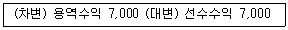
- 현금기준
- 보수주의
- 발생기준
- 역사적 원가
- 공정가치
(정답률: 알수없음)
48. (주)주택은 20x1년 10월 1일에 1년분 보험료 ￦120,000을 현금지급하면서 선급보험료로 회계처리하였다. 다음 중 (주)주택의 기말 결산수정분개로 옳은 것은? (단, 보험료는 월할계산한다.)
- (차변) 보험료 30,000, (대변) 선급보험료 30,000
- (차변) 선급보험료 90,000, (대변) 보험료 90,000
- (차변) 선급보험료 30,000, (대변) 보험료 30,000
- (차변) 보험료 90,000, (대변) 선급보험료 90,000
- (차변) 보험료 120,000, (대변) 현금 120,000
(정답률: 알수없음)
49. (주)한국은 20x1년 말 은행계정조정을 위하여 거래은행인 S은행에 당좌예금잔액을 조회한 결과 회사측 잔액과 다른 ￦250,000이라는 회신을 받았다. ㈜한국은 조사결과 다음과 같은 사실들을 발견하였다. 은행계정조정 전 20x1년 말 (주)한국의 당좌예금 장부 금액은?
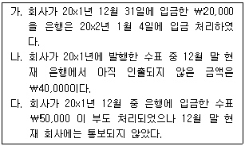
- ￦200,000
- ￦220,000
- ￦240,000
- ￦260,000
- ￦280,000
(정답률: 알수없음)
50. 다음 자료를 이용하여 매출원가를 구하면 얼마인가? (단, 재고자산평가손실과 재고자산감모손실은 없다.)
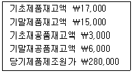
- ￦272,000
- ￦274,000
- ￦280,000
- ￦282,000
- ￦284,000
(정답률: 알수없음)
51. 재고자산에 관한 설명으로 옳지 않은 것은?
- 원가측정방법으로 소매재고법은 그 평가결과가 실제 원가와 유사한 경우에 편의상 사용할 수 있다.
- 재고자산의 단위원가 결정방법으로 후입선출법을 사용할 수 있다.
- 정상적인 영업과정에서 판매를 위하여 보유중인 자산은 재고자산이다.
- 재고자산의 판매시, 관련된 수익을 인식하는 기간에 재고자산의 장부금액을 비용으로 인식한다.
- 매입운임은 재고자산의 취득원가에 포함된다.
(정답률: 알수없음)
52. (주)한국의 20x1년 손익관련 자료는 다음과 같다. 20x1년도 (주)한국의 당기순이익은?
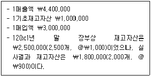
- ￦1,000,000
- ￦1,700,000
- ￦1,800,000
- ￦2,000,000
- ￦2,200,000
(정답률: 47%)
53. (주)한국은 재고자산을 항목별 저가기준으로 평가하고 있다. 아래의 기말 자료를 이용하여 재고자산평가손실을 구하면 얼마인가?
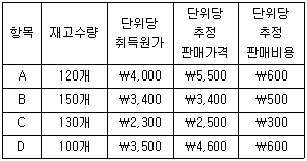
- ￦88,000
- ￦89,000
- ￦98,000
- ￦99,000
- ￦109,000
(정답률: 28%)
54. 유형자산의 취득과 관련하여 경영진이 의도하는 방식으로 자산을 가동하는데 필요한 장소와 상태에 이르게 하는데 직접 관련되는 원가가 아닌 것은?
- 유형자산의 건설과 직접적으로 관련되어 발생한 종업원 급여
- 설치장소 준비 원가
- 관리 및 기타 일반간접원가
- 최초의 취급 관련 원가
- 설치원가 및 조립원가
(정답률: 37%)
55. (주)한국은 20x1년 초에 총 100톤의 철근을 생산할 수 있는 기계장치(내용연수 4년, 잔존가치 ₩200,000)를 ₩2,000,000에 취득하였다. 정률은 0.44이고, 1차 년도부터 4차 년도까지 기계장치의 철근생산량은 10톤, 20톤, 30톤, 40톤인 경우 1차 년도에 인식할 감가상각비가 가장 크게 계상되는 방법은?
- 정액법
- 정률법
- 연수합계법
- 생산량비례법
- 모두 동일함
(정답률: 10%)
56. 유형자산의 회계처리로 옳지 않은 것은?
- 원가모형에서 최초 인식 이후 유형자산의 장부금액은 원가에서 감가상각누계액과 손상차손누계액을 차감한 금액을 말한다.
- 재평가는 보고기간말에 자산의 장부금액이 공정가치와 중요하게 차이가 나지 않도록 주기적으로 수행한다.
- 감가상각방법의 변경은 회계정책의 변경으로 회계처리한다.
- 유형자산의 잔존가치와 내용연수는 적어도 매 회계연도말에 재검토한다.
- 유형자산의 장부금액은 처분하는 때 또는 사용이나 처분을 통하여 미래경제적효익이 기대되지 않을 때 제거한다.
(정답률: 알수없음)
57. (주)미호는 소유하고 있던 유형자산을 (주)월곡이 소유하고 있는 유형자산과 교환하였다. 두 회사가 소유하고 있는 유형자산의 장부금액과 공정가치는 다음과 같다. 해당 교환과 관련하여 (주)미호가 현금 ￦100,000을 추가로 지급하였을 때, 이 교환거래로 인해 ㈜미호가 인식할 유형자산은 얼마인가? (단, 유형자산의 교환 거래는 상업적 실질이 있으며, (주)미호의 유형자산 공정가치는 신뢰성이 있다.)
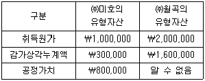
- ￦500,000
- ￦600,000
- ￦800,000
- ￦900,000
- ￦1,000,000
(정답률: 알수없음)
58. 무형자산의 설명으로 옳은 것은?
- 내부적으로 창출된 영업권은 자산으로 인식할 수 있다.
- 무형자산은 당해 자산의 법률적 취득시점부터 합리적기간 동안 상각한다.
- 물리적 형체가 없다는 점에서 유형자산과 다르며, 손상차손의 대상은 아니다.
- 무형자산은 정액법 또는 생산량비례법으로만 상각해야 한다.
- 최초에 비용으로 인식한 무형항목에 대한 지출은 그 이후에 무형자산의 원가로 인식할 수 없다.
(정답률: 17%)
59. 충당부채, 우발부채 및 우발자산의 회계처리에 관한 설명으로 옳지 않은 것은?
- 미래의 예상 영업손실은 충당부채로 인식한다.
- 우발자산은 자산으로 인식하지 아니한다.
- 우발부채는 부채로 인식하지 아니한다.
- 자산의 예상처분이익은 충당부채를 측정하는 데 고려하지 아니한다.
- 충당부채로 인식하는 금액은 현재의무를 보고기간말에 이행하기 위하여 소요되는 지출에 대한 최선의 추정치이어야 한다.
(정답률: 10%)
60. 당기손익인식금융부채가 아닌 사채에 관한 설명으로 옳지 않은 것은?
- 액면(표시)이자율이 유효이자율보다 낮은 경우에는 할인발행된다.
- 유효이자율법에서 사채할인발행차금의 상각액은 매년 증가한다.
- 유효이자율법을 적용할 경우 할인 및 할증발행 모두 이자비용은 매년 감소한다.
- 할증발행의 경우 사채의 장부금액은 매년 감소한다.
- 최초인식 후 유효이자율법을 사용하여 상각후원가로 측정한다.
(정답률: 28%)
61. 재무상태표에 해당되는 금액을 표시할 때, 구분해서 표시할 최소한의 항목에 해당되지 않는 것은?
- 현금및현금성자산
- 투자부동산
- 무형자산
- 당좌자산
- 생물자산
(정답률: 알수없음)
62. 이자, 배당(현금배당), 로열티 수익의 인식과 관련된 설명으로 옳지 않은 것은?
- 이자, 배당, 로열티 수익은 거래와 관련된 경제적효익의 유입가능성이 높고 수익금액을 신뢰성 있게 측정할 수 있을 때 인식한다.
- 이자수익은 원칙적으로 유효이자율법으로 인식한다.
- 배당수익은 주주로서 배당을 받을 권리가 확정되는 시점에 인식한다.
- 로열티수익은 관련된 약정의 실질을 반영하여 발생 기준에 따라 인식한다.
- 이미 수익으로 인식한 이자, 배당, 로열티 수익은 추후 회수가능성이 불확실해지면 그 수익금액을 조정한다.
(정답률: 0%)
63. 다음은 (주)청풍의 20x1년 초에 시작해서 20x3년 말에 끝나는 공사계약(총공사계약금액 ￦5,000,000)과 관련된 자료이다. (주)청풍이 20x2년도에 인식할 공사 관련 이익은 얼마인가? (단, (주)청풍은 발생한 누적 계약원가를 추정총계약원가로 나눈 진행률(진행기준)을 사용하여 수익과 비용을 인식한다.)
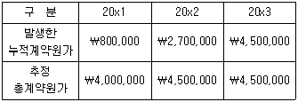
- ￦100,000
- ￦150,000
- ￦200,000
- ￦250,000
- ￦300,000
(정답률: 25%)
64. 수익의 인식에 관한 설명으로 옳지 않은 것은?
- 위탁판매의 경우 위탁자는 수탁자가 제3자에게 재화를 판매한 시점에 인식한다.
- 시용판매에서는 고객에게 상품을 인도한 날에 인식한다.
- 용역수익은 용역제공 거래의 결과를 신뢰성 있게 추정할 수 있을 때 보고기간말에 그 거래의 진행률에 따라 인식한다.
- 광고매체수수료는 광고가 소비대중에게 방영되거나 전달되었을 때 인식한다.
- 정기간행물의 가액이 매기 비슷한 경우에는 발송기간에 걸쳐 정액기준으로 인식한다.
(정답률: 50%)
65. 다음 주어진 자료를 이용하여 영업활동 현금흐름을 구하면?
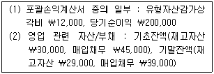
- ￦2⑤,000
- ￦207,000
- ￦213,000
- ￦215,000
- ￦218,000
(정답률: 알수없음)
66. 전체 재무제표에 포함되지 않는 것은?
- 재무상태표
- 포괄손익계산서
- 자본변동표
- 이사회보고서
- 주석
(정답률: 40%)
67. 현금흐름표의 재무활동 현금흐름에 포함되는 항목은?
- 이자수익으로 인한 현금유입
- 건물의 취득, 처분
- 현금의 대여, 회수
- 유가증권의 취득, 처분
- 차입금의 차입, 상환
(정답률: 알수없음)
68. 재무상태표에 관한 설명으로 옳지 않은 것은?
- 자산과 부채는 유동성이 높은 항목부터 배열하는 것을 원칙으로 한다.
- 유동성 순서에 따른 표시방법을 적용하지 않는 경우 자산과 부채는 유동과 비유동으로 구분하여 표시한다.
- 기업의 재무상태를 이해하는 데 목적적합한 경우 재무상태표에 항목, 제목 및 중간합계를 추가하여 표시한다.
- 주식회사의 경우 자본은 소유주가 출연한 자본, 이익잉여금, 적립금 등으로 구분하여 표시할 수 있다.
- 매입채무와 충당부채는 구분하여 표시한다.
(정답률: 알수없음)
69. 단일 포괄손익계산서에 표시될 수 없는 것은?
- 금융원가
- 법인세비용
- 당기순이익
- 특별손익
- 자산재평가차익
(정답률: 알수없음)
70. 회계변경 및 오류수정에 관한 설명으로 옳지 않은 것은?
- 과거의 합리적 추정이 후에 새로운 정보추가로 수정되는 것은 오류수정이 아니다.
- 거래의 실질이 다른 거래에 대해 다른 회계정책을 적용하는 것은 회계정책의 변경이다.
- 측정기준의 변경은 회계정책의 변경이다.
- 자산으로 처리해야할 항목을 비용처리한 것은 오류에 해당된다.
- 감가상각자산의 추정내용연수가 변경되는 경우 그 변경 효과는 전진적으로 인식한다.
(정답률: 34%)
71. 재무상태표에 표시되는 기말 재고자산 금액이 오류로 인하여 과소계상되었다. 이러한 오류가 존재하지 않는 경우(A)와 오류가 존재하는 경우(B)에 유동비율 및 매출총이익률 각각에 대한 비교로 옳은 것은? (순서대로 유동비율, 매출총이익률)
- A ＜ B, A ＞ B
- A ＜ B, A ＜ B
- A ＞ B, A ＞ B
- A ＞ B, A = B
- A = B, A = B
(정답률: 알수없음)
72. 다음 자료를 이용하여 두 개의 기업 중 당기 총자산 순이익률이 높은 기업과 기말 부채비율이 높은 기업을 선택한 것은? (단, 당기 중 자본거래와 부채의 증감은 없다.)(순서대로 총자산순이익률, 부채비율)
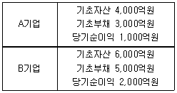
- A기업, A기업
- A기업, B기업
- B기업, A기업
- B기업, B기업
- B기업, A·B기업 동일
(정답률: 알수없음)
73. (주)한국의 20x1년도 총매출액과 이에 대한 총변동 원가는 각각 ￦200,000, ￦150,000이다. (주)한국의 손익분기점 매출액이 ￦120,000일 때 총고정원가는?
- ￦28,000
- ￦30,000
- ￦32,000
- ￦34,000
- ￦36,000
(정답률: 19%)
74. (주)한국은 20x1년 초에 설립되었다. 20x1년 중 제품을 10,000단위 생산하여 8,000단위를 판매하였다. 이와 관련된 원가자료는 다음과 같다. 전부원가계산과 변동원가계산에 의한 20x1년 기말제품 재고액은 각각 얼마인가? (단, 재공품은 없다.) (순서대로 전부원가계산, 변동원가계산)
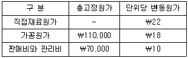
- ￦122,000, ￦80,000
- ￦122,000, ￦100,000
- ￦102,000, ￦100,000
- ￦102,000, ￦80,000
- ￦80,000, ￦60,000
(정답률: 알수없음)
75. (주)한국은 제조부문과 보조부문을 이용하여 제품을 생산하고 있다. 보조부문에서 제공한 용역량은 다음과 같으며, 수선부문과 관리부문에 집계된 원가는 각각 ￦160,000, ￦80,000이다. 상호배부법으로 보조부문원가를 배부할 때 필요한 연립방정식으로 옳은 것은? (단, 배부해야 할 총수선 부문원가와 총관리부문원가를 각각 M과 F라 한다.)
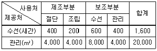
- M = 160,000 + 0.5F, F = 80,000 + 0.25M
- M = 160,000 + 0.4F, F = 80,000 + 0.25M
- M = 160,000 + 0.5F, F = 80,000 + 0.4M
- M = 160,000 + 0.4F, F = 80,000 + 0.5M
- M = 160,000 + 0.4F, F = 80,000 + 0.4M
(정답률: 알수없음)
76. (주)한국은 직접노무시간을 기준으로 제조간접원가를 예정배부한다. 당기의 제조간접원가 예산은 ￦300,000, 예정조업도는 100,000시간, 실제조업도는 120,000시간이다. 당기의 제조간접원가 배부차이가 ￦35,000(과대)일 때 제조간접원가 실제발생액은 얼마인가?
- ￦325,000
- ￦330,000
- ￦335,000
- ￦340,000
- ￦345,000
(정답률: 알수없음)
77. (주)한국은 20x1년에 설립되어 단일 제품 4,000단위를 생산하여 단위당 ￦250에 모두 판매하였으며, 제품의 변동원가율은 60%이다. 판매담당자는 20x2년에 연간 광고비를 ￦90,000만큼 증가시키면 연간 매출액이 ￦300,000만큼 증가할 것으로 예측하고 있다. 이 예측이 옳다면 20x2년의 영업이익이 20x1년보다 얼마나 증가하는가? (단, 20x2년의 판매가격과 원가행태는 20x1년과 동일하며, 재고자산은 없다.)
- ￦25,000
- ￦30,000
- ￦35,000
- ￦40,000
- ￦45,000
(정답률: 알수없음)
78. (주)한국은 표준원가계산제도를 채택하고 있다. 20x1년도 9월에 제품 2,100개를 생산했으며, 직접노무원가는 ￦4,000,000이 발생하였다. 시간당 실제임률은 ￦1,000이며, 시간당 표준임률은 ￦900이고, 제품 단위당 표준직접노무시간은 2시간이다. 9월의 직접노무원가 능률차이(유리)는 얼마인가? (단, 재공품은 없다.)
- ￦150,000
- ￦160,000
- ￦170,000
- ￦180,000
- ￦190,000
(정답률: 알수없음)
79. (주)한국은 단일 공정으로 제품A를 생산하고 있으며, 종합원가계산제도를 채택하고 있다. 직접재료는 공정초에 전량 투입되며, 가공원가는 공정 전체에 걸쳐 균등하게 발생한다. 20x1년 9월의 물량자료는 다음과 같다. 선입선출법에 따르면 9월 직접재료원가의 완성품환산량은 몇 단위인가?
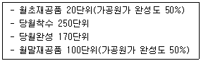
- 210단위
- 220단위
- 230단위
- 240단위
- 250단위
(정답률: 30%)
80. (주)한국은 20x1년 10월에 결합제품A와 B를 각각 2,000개, 3,000개 생산하였으며, 결합원가 ￦500,000이 발생하였다. 제품A는 추가가공 없이 단위당 ￦150에 판매되지만, 제품B는 추가가공원가 ￦40,000이 투입된 후 단위당 ￦180에 판매된다. (주)한국은 순실현가치법을 이용하여 결합원가를 배분하고 있다. 10월에 발생한 결합원가 중에서 제품B에 배분할 금액은? (단, 재공품은 없다.)
- ￦310,000
- ￦312,500
- ￦315,000
- ￦317,500
- ￦320,000
(정답률: 알수없음)
3과목: 공동주택시설개론
81. 공동주택에 적용되는 용도별 기본 등분포 활하중이 가장 큰 곳은?
- 거실
- 주방
- 화장실
- 발코니
- 침실
(정답률: 40%)
82. 철근콘크리트 공사에 사용되는 재료의 취급 및 저장에 관한 설명으로 옳지 않은 것은?
- 철근은 직접 지상에 놓지 말아야 한다.
- 3개월 이상 장기간 저장한 시멘트는 사용하기에 앞서 재시험을 실시하여 그 품질을 확인한다.
- 골재의 저장설비에는 적당한 배수시설을 설치하여 골재의 표면수가 모두 제거되도록 하여야 한다.
- 포대시멘트를 쌓아서 단기간 저장하는 경우, 시멘트를 쌓아올리는 높이는 13포대 이하로 하는 것이 바람직하다.
- 혼화재는 방습적인 사일로 또는 창고 등에 품종별로 구분하여 저장한다.
(정답률: 알수없음)
83. 옹벽에 관한 설명으로 옳지 않은 것은?
- 철근콘크리트 옹벽 시공시 수평방향으로 콘크리트를 이어치는 것이 바람직하다.
- 옹벽의 활동에 대한 저항력은 옹벽에 작용하는 수평력의 1.5배 이상이어야 한다.
- 무근콘크리트 옹벽은 자중에 의하여 저항력을 발휘하는 중력식 형태로 한다.
- 철근콘크리트 캔틸레버식 옹벽은 저판 및 벽체만으로 토압을 받도록 설계된 옹벽을 말한다.
- 옹벽의 전도에 대한 저항모멘트는 횡토압에 의한 전도모멘트의 2.0배 이상이어야 한다.
(정답률: 42%)
84. 기초를 설치할 때의 유의사항으로 옳지 않은 것은?
- 기초는 상부구조의 하중을 충분히 지반에 전달할 수 있는 구조로 한다.
- 독립기초를 지중보로 서로 연결하면 건물의 부등침하방지에 효과적이다.
- 기초는 그 지역의 동결선(凍結線) 이하에 설치해야 한다.
- 동일 건물의 기초에서는 이종형식의 기초를 병용하는 것이 좋다.
- 땅 속의 경사가 심한 굳은 지반에 올려놓은 기초는 슬라이딩의 위험성이 있다.
(정답률: 40%)
85. 벽돌조에 설치되는 신축줄눈의 위치에 관한 설명으로 옳지 않은 것은?
- 벽 높이가 변하는 곳에 설치한다.
- 개구부의 가장자리에 설치한다.
- 응력이 집중되는 곳에 설치한다.
- 벽 두께가 일정한 곳에 설치한다.
- L, T, U형 건물에서는 벽 교차부 근처에 설치한다.
(정답률: 34%)
86. 공동주택의 지하층에 드라이 에어리어(dry area)의 설치 효과와 가장 거리가 먼 것은?
- 방수
- 방습
- 방진
- 채광
- 통풍
(정답률: 25%)
87. 철골구조에 관한 설명으로 옳지 않은 것은?
- H형강보에서 플랜지는 상ㆍ하에 날개처럼 내민 부분을 말한다.
- H형강보에서 웨브는 중앙복부를 말하며 이 부분의 부재를 복부재라고도 한다.
- 커버 플레이트는 전단력에 의한 웨브의 좌굴을 방지하기 위해 사용된다.
- 하이브리드 빔(hybrid beam)은 플랜지와 웨브의 재질을 다르게 하여 조립시켜 휨성능을 높인 조립보이다.
- 일반적으로 철골기둥은 세장(細長)하여 압축력만으로도 좌굴현상을 일으키기 쉽다.
(정답률: 알수없음)
88. 다음 중 철근콘크리트보의 단부에 발생하는 대각선 균열의 주된 원인은?
- 압축력
- 전단력
- 부착력
- 비틀림
- 마찰력
(정답률: 알수없음)
89. 콘크리트의 건조수축에 관한 설명으로 옳지 않은 것은?
- 단위 수량이 많을수록 건조수축이 증가한다.
- 상대 습도가 낮을수록 건조수축이 증가한다.
- 단위 시멘트량이 적을수록 건조수축이 증가한다.
- 골재 함량이 적을수록 건조수축이 증가한다.
- 부재의 단면치수가 작을수록 건조수축이 증가한다.
(정답률: 알수없음)
90. 방습공사에 관한 설명으로 옳지 않은 것은?
- 방습공사 시공법에는 박판 시트계, 아스팔트계, 시멘트 모르타르계, 신축성 시트계 등이 있다.
- 콘크리트, 블록, 벽돌 등의 벽체가 지면에 접하는 곳은 지상 100~200mm 내외 위에 수평으로 방습층을 설치한다.
- 아스팔트 펠트, 아스팔트 루핑 등의 방습층 공사에서 아스팔트 펠트, 아스팔트 루핑 등의 너비는 벽체 등의 두께보다 15mm 내외로 좁게 하고 직선으로 잘라 쓴다.
- 방습층을 방수 모르타르로 시공할 경우 바탕면을 충분히 물씻기 청소를 하고 시멘트 액체 방수공법에 준하여 시공한다.
- 콘크리트 다짐바닥, 벽돌깔기 등의 바닥면에 방습층을 둘 때에 사용되는 아스팔트 펠트, 비닐지의 이음은 50mm 이상 겹치고 필요할 때는 접착제로 접착한다.
(정답률: 알수없음)
91. 창호에 관한 설명으로 옳지 않은 것은?
- 여닫이창호 : 창호의 한 쪽에 경첩 등을 선틀 또는 기둥에 달아 한쪽으로 여닫게 한 것
- 미서기창호 : 창호받이재에 홈을 한 줄 파거나 레일을 붙여 문을 이중벽 속 등에 밀어 넣는 것
- 오르내리창 : 수직 홈에 문을 달아 상하로 슬라이딩 시키는 창으로 추를 매달아 균형을 유지함
- 회전문 : 통풍, 기류를 방지하고 출입인원을 조절하는 목적으로 사용함
- 접문 : 여러 장의 문을 경첩으로 연결하고 큰 방을 분할하거나 전체를 개방할 때 사용함
(정답률: 60%)
92. 창호 철물에 관한 설명으로 옳지 않은 것은?
- 도어 클로저는 여닫이문이 저절로 닫히게 하는 철물이다.
- 도어 체인은 여닫이문이 일정 한도 이상 열리지 않도록 하는 철물이다.
- 자유경첩은 문이 저절로 닫혀도 15cm 정도 열려 사용자가 없음을 알리는 철물이다.
- 나이트 래치는 외부에서는 열쇠를 쓰고, 내부에서는 작은 손잡이를 틀어서 열고 잠그는 철물이다.
- 크레센트는 오르내리창의 여밈대나 미서기창의 마중대에 달아 돌려서 잠그는 철물이다.
(정답률: 알수없음)
93. 공사비 구성에 관한 설명으로 옳지 않은 것은?
- 일반적으로 공사의 예정가격은 공사 총원가에 부가가치세를 합한 것이다.
- 소모재료비, 소모공구ㆍ기구ㆍ비품비는 간접재료비에 속한다.
- 노무비는 직접노무비와 간접노무비로 구분한다.
- 현장에서 사용하는 전력비, 운반비, 가설비는 일반관리비에 속한다.
- 기술료, 품질관리비, 연구개발비는 경비에 속한다.
(정답률: 알수없음)
94. 타일공사에서 욕실 바닥 면적 1m2에 소요되는 모자이크 유니트형 타일의 정미량은?(단, 모자이크 유니트형 타일 1장의 크기는 300mm×300mm 이다.)
- 7.11장
- 8.11장
- 9.11장
- 10.11장
- 11.11장
(정답률: 알수없음)
95. 지붕 위의 빗물을 모아 하수구로 유도하는 홈통에서 빗물이 흐르는 순서로 알맞은 것은?
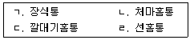
- ㄱ→ㄴ→ㄷ→ㄹ
- ㄴ→ㄱ→ㄹ→ㄷ
- ㄱ→ㄴ→ㄹ→ㄷ
- ㄴ→ㄷ→ㄱ→ㄹ
- ㄱ→ㄷ→ㄴ→ㄹ
(정답률: 40%)
96. 바닥 마감판을 필요에 따라 들어내어 파이프, 전선 등의 설치를 용이하게 할 수 있는 바닥은?
- 프리 액세스(free access) 바닥
- 데크 플레이트(deck plate) 바닥
- 프리캐스트 콘크리트(precast concrete) 바닥
- 프리스트레스트 콘크리트(prestressed concrete) 바닥
- ALC(Autoclaved Lightweight Concrete) 바닥
(정답률: 알수없음)
97. 타일공사의 바탕처리 및 만들기에 관한 설명으로 옳지 않은 것은?
- 타일을 붙이기 전에 바탕의 들뜸, 균열 등을 검사하여 불량부분을 보수한다.
- 바닥면은 물고임이 없도록 구배를 유지하되 1/100을 넘지 않도록 한다.
- 여름에 외장타일을 붙일 경우에는 부착력을 높이기 위해 바탕면을 충분히 건조시킨다.
- 타일붙임 바탕의 건조상태에 따라 뿜칠 또는 솔을 사용하여 물을 골고루 뿌린다.
- 흡수성이 있는 타일에는 제조업자의 시방에 따라 물을 축여 사용한다.
(정답률: 알수없음)
98. 도장공사시 잔금 및 균열의 원인으로 옳지 않은 것은?
- 기온차가 심한 경우
- 초벌칠 건조가 불충분할 경우
- 건조제를 과다 사용할 경우
- 초벌칠과 재벌칠의 재질이 다를 경우
- 초벌칠과 재벌칠의 색상을 다르게 했을 경우
(정답률: 알수없음)
99. 미장공사에 관한 설명으로 옳지 않은 것은?
- 바름면의 오염방지와 조기건조를 위해 통풍 및 일조량을 확보한다.
- 미장바름작업 전에 근접한 다른 부재나 마감면 등은 오염되지 않도록 적절히 보양한다.
- 시멘트 모르타르 바름공사에서 시멘트 모르타르 1회의 바름두께는 바닥의 경우를 제외하고 6mm를 표준으로 한다.
- 시멘트 모르타르 바름공사에서 초벌바름의 바탕두께가 너무 두껍거나 얼룩이 심할 때는 고름질을 한다.
- 바람 등에 의하여 작업장소에 먼지가 날려 작업면에 부착될 우려가 있는 경우는 방풍조치를 한다.
(정답률: 알수없음)
100. 도장공사 및 재료에 관한 설명으로 옳지 않은 것은?
- 도장공사의 목적은 방부, 방습, 방청 등의 특수목적의 달성, 물체의 보호, 외관의 미화 등이다.
- 도료를 사용하기 위해 개봉할 때에는 담당원의 입회 하에 개봉하는 것을 원칙으로 한다.
- 별도의 지시가 없을 경우 스테인리스강, 크롬판, 동, 주석 또는 이와 같은 금속으로 마감된 재료는 도장하지 않는다.
- 가소제는 건조된 도막의 내구력을 증가시키는데 사용된다.
- 안료는 분산제로서 도장의 색상을 내며 햇빛으로부터 결합재의 손상을 방지한다.
(정답률: 알수없음)
101. 다음 설명 중 옳지 않은 것은?
- 물의 높이 1m는 압력으로 나타낼 때 약 9.8kPa 이다.
- 절대압력은 게이지 압력과 그 때의 대기압의 합이다.
- 베르누이 정리에 의하면, 유속이 빠른 곳이 정압이 작다.
- 먹는 물의 수소이온농도 범위는 pH 2.5 이상 pH 5.7 이하이다.
- 마찰손실은 관의 길이, 손실계수(마찰계수)에 비례하고 관경에 반비례한다.
(정답률: 알수없음)
102. 부유물질로서 오수 중에 현탁되어 있는 물질을 의미하는 것은?
- BOD
- COD
- DO
- SS
- ppm
(정답률: 알수없음)
103. 건물의 난방부하계산에 관한 설명으로 옳지 않은 것은?
- 벽체의 열관류율이 클수록 건물의 열손실은 감소한다.
- 실내외 온도차가 클수록 건물의 열손실은 증가한다.
- 최대 열부하계산으로 송풍량 또는 장치용량을 결정할 수 있다.
- 건물의 외벽 면적이 넓을수록 건물의 열손실은 증가한다.
- 난방부하는 실내손실열량, 장치손실열량, 외기부하 등을 포함한다.
(정답률: 알수없음)
104. 건물에 전기를 공급하기 위한 수변전설비의 초기 계획시 부하설비 용량의 추정방법으로 옳은 것은?
- 부하밀도×연면적
- 부하밀도×부하율
- 부하밀도×부등률
- 최대수요전력×연면적
- 최대수요전력×부등률
(정답률: 40%)
1⑤. 배관에 사용되는 신축이음이 아닌 것은?
- 리프트(lift)형 신축이음
- 루프(loop)형 신축이음
- 슬리브(sleeve)형 신축이음
- 벨로스(bellows)형 신축이음
- 스위블(swivel)형 신축이음
(정답률: 알수없음)
106. 다음의 중앙난방방식에서 간접난방에 속하는 것은?
- 온수 난방
- 온풍 난방
- 증기 난방
- 복사 난방
- 저온수 난방
(정답률: 알수없음)
107. 옥외소화전이 4개 설치되어 있는 경우 수원의 저수량으로 옳은 것은?
- 6m3
- 8m3
- 10m3
- 12m3
- 14m3
(정답률: 37%)
108. 위생기구에 관한 설명으로 옳지 않은 것은?
- 우수한 대변기의 조건으로는 건조면적이 크고 유수면이 좁아야 한다.
- 위생기구의 재질은 흡수성이 작아야 하며, 내식성, 내마모성 등이 우수해야 한다.
- 사이펀 제트식(syphon-jet type) 대변기는 세출식(wash-out type)에 비하여 유수면을 넓게, 봉수 깊이를 깊게 할 수 있다.
- 세출식(wash-out type) 대변기는 오물을 대변기의 얕은 수면에 받아 대변기 가장자리의 여러 곳에서 분출되는 세정수로 오물을 씻어내리는 방식이다.
- 블로우 아웃식(blow-out type) 대변기는 오물을 트랩 유수 중에 낙하시켜 주로 분출하는 물의 힘에 의하여 오물을 배수로 방향으로 배출하는 방식이다.
(정답률: 46%)
109. 공기조화설비계획시 고려해야 할 조닝(zoning) 방법으로 옳은 것은?
- 조명방식별 조닝
- 실 용도별 조닝
- 급탕 조닝
- 급수 조닝
- 열원방식별 조닝
(정답률: 알수없음)
110. 결로에 관한 설명으로 옳지 않은 것은?
- 벽체의 열관류율이 클수록 발생하기 쉽다.
- 실내와 실외의 온도차가 클수록 발생하기 쉽다.
- 내부결로 방지를 위해 단열재의 실외측에 방습막을 설치한다.
- 표면결로 방지를 위해 실내에서 발생하는 수증기를 억제한다.
- 표면결로 방지를 위해 외벽의 실내측 표면온도를 실내공기의 노점온도보다 높게 유지한다.
(정답률: 70%)
111. 냉동기에 관한 설명으로 옳지 않은 것은?
- 흡수식 냉동기의 냉매로는 물이 사용된다.
- 냉동기의 성적계수(COP)는 그 값이 작을수록 에너지 효율이 좋아진다.
- 터보식 냉동기는 임펠러의 원심력에 의해 냉매 가스를 압축한다.
- 압축식 냉동기의 냉매 순환은 증발기→압축기→응축기→팽창밸브→증발기 순으로 이루어진다.
- 흡수식 냉동기의 냉매 순환은 증발기→흡수기→재생기(발생기)→응축기→증발기 순으로 이루어진다.
(정답률: 알수없음)
112. 단위 세대당 환기대상 체적이 200m3인 아파트를 신축할 경우, 세대별 시간당 필요한 최소 환기량은? (단, 아파트 규모는 300세대이다.)
- 120m3/h
- 140m3/h
- 160m3/h
- 180m3/h
- 200m3/h
(정답률: 알수없음)
113. 엘리베이터의 안전장치 중 전기적 안전장치에 속하지 않는 것은?
- 주접촉기
- 전자 브레이크
- 슬로다운 스위치
- 과부하 계전기
- 완충기
(정답률: 70%)
114. 급수설비에 관한 설명으로 옳지 않은 것은?
- 중수(中水) 급수장치는 살수, 세차 및 대소변기의 세정 등에 이용된다.
- 수도직결방식은 고가수조방식보다 시설비 및 위생적인 면에서 유리하다.
- 워터해머(water hammer)를 방지하기 위해 배관 내 유속은 2m/s 이내로 하는 것이 바람직하다.
- 수질오염을 방지하기 위해 크로스 커넥션(cross connection)이 되도록 배관구성을 한다.
- 관균등표에 의한 방법과 마찰저항선도(유량선도)에 의한 방법은 급수배관의 관경결정에 사용된다.
(정답률: 64%)
115. 급수설비 중 펌프직송방식(부스터방식)에 관한 설명으로 옳은 것은?
- 주택과 같은 소규모 건물(2∼3층 이하)에 주로 이용된다.
- 밀폐용기 내에 펌프로 물을 보내 공기를 압축시켜 압력을 올린 후 그 압력으로 필요 장소에 급수하는 방식이다.
- 도로에 있는 수도본관에서 수도 인입관을 연결하여 건물 내의 필요개소에 직접 급수하는 방식이다.
- 저수조에 저장된 물을 펌프로 고가수조에 양수하고, 여기서 급수관을 통해 건물의 필요개소에 급수하는 방식이다.
- 급수관 내의 압력 또는 유량을 탐지하여 펌프의 대수를 제어하는 정속방식과 회전수를 제어하는 변속방식이 있으며, 이를 병용하기도 한다.
(정답률: 알수없음)
116. 난방설비에 관한 설명으로 옳지 않은 것은?
- 증기난방은 온수난방에 비해 방열량 조절이 어렵다.
- 증기난방은 온수난방에 비해 배관에 부식이 발생하기 쉽다.
- 직접 환수방식은 각 난방기기의 유량을 동일하게 순환시키기 위해 적용되는 방식이다.
- 보일러 종류 중 수관보일러는 구조상 고압 및 대용량에 적합하므로 지역난방과 같은 대규모 설비 등에서 많이 채택된다.
- 100℃ 이상의 고온수를 이용하여 난방을 하는 경우, 온도 유지를 위해 고온수 난방계통 내에 가압이 이루어져야 한다.
(정답률: 알수없음)
117. 가스보일러에서 10℃의 물 10,000kg을 70℃로 가열할 때 가스소비량은? (단, 가스의 발열량은 42,000kJ/m3 , 물의 비열은 4.2kJ/kg℃, 가스보일러의 효율은 80% 이다.)
- 70m3
- 75m3
- 80m3
- 85m3
- 90m3
(정답률: 알수없음)
118. 다음 중 가스계량기의 측정방식에 속하지 않는 것은?
- 터빈식
- 광량감지식
- 와류식
- 오리피스식
- 벤튜리식
(정답률: 알수없음)
119. 홈네트워크 구현 기술 중 무선통신 기술에 해당하지 않는 것은?
- Home RF
- Bluetooth
- IEEE 1394
- 무선 LAN
- ZigBee
(정답률: 40%)
120. 배관설비에 관한 설명으로 옳은 것은?
- 볼 조인트(ball joint)는 방열기에 주로 사용되는 신축이음이다.
- 플라스틱관은 흔히 PVC관이라고 불리는 것으로 배관 두께별로 K형, L형, M형이 있다.
- 리듀서(reducer)는 하나의 배관이 두 개로 분기되거나 두 개의 배관이 하나로 합쳐질 때 사용되는 이음이다.
- 글로브 밸브(globe valve)는 배관 내 유체 흐름의 역류를 방지하여 흐름 방향을 일정하게 유지하는 목적으로 사용되는 밸브이다.
- 스트레이너(strainer)는 배관 계통내의 이물질을 거르는 역할을 하는 것이다.
(정답률: 알수없음)